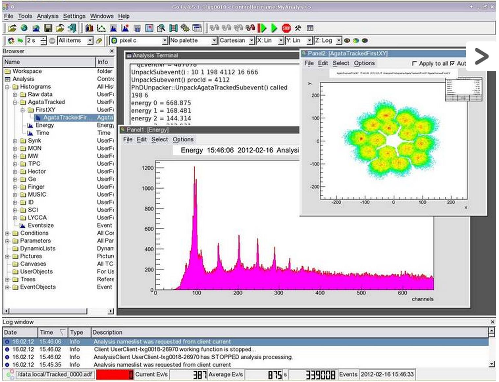

Outlock
- What they do at GSI?
- Prespec project.
- Teams and technology.
- Software requirements.
- Data source.
- Software structure.
- General analysis.
- Analysis example: Gamma 3D detection.
- What if?...
Edana Merchan


Local team:
Analysis & Online:
Technology:

Deconvolution (reverse analysis).
\[ E_{\gamma}=\frac{E_{\gamma_0}}{1-\cos{\theta}} \]


Noise reduction (Filtering), parametrization reduction (random forest).

Histograming, Gaussian fitting.

With some more computer infrastructure: